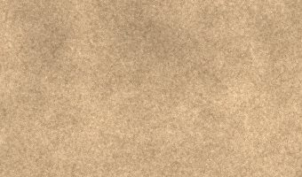
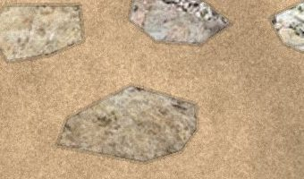
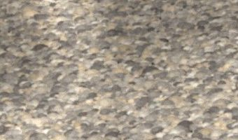
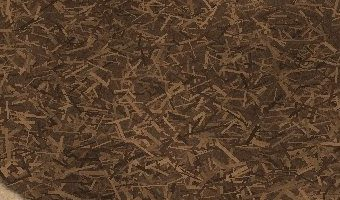

Crushed granite in place of the flagstone patio, the old flagstone reset as stepping stones down the side path to the gate, river rock under the AC and at the drain outlet, mulch in the beds, and a French drain from the pool equipment (0) to the shed corner (1).
The swatches are cropped from the renders below, so what you see in the stations is what you see here.




Drag the handle to compare. Tick “my markup” to see your scribble in the left half instead of the original photo. Things sitting on a zone in the photo (the hose reel, hoses, pots) are painted over by the new surface; everything else is untouched. Each station has an ideas box underneath it: what you post lands in the shared sheet, and anyone with the link can read and edit the ideas. Attach a photo (a marked-up screenshot works well) and it is kept in Drive with a link in the sheet; tap a thumbnail to see it full size.
| Item | Spec |
|---|---|
| Inlet (0) | 9 by 9 in catch basin with grate, set flush in the granite next to the pool equipment |
| Pipe | 4-in perforated PVC (SDR 35) or corrugated with sock, holes down |
| Trench | About 10 in wide, deep enough to fall at least an eighth of an inch per foot from basin to outlet |
| Bedding | Non-woven fabric wrapped around washed gravel, a few inches below and above the pipe |
| Outlet (1) | Open end or pop-up emitter under the river-rock pocket at the shed corner |
| Crossing | Under the path; steppers bridge the trench, nothing sits directly on the pipe |
Nothing here is measured. Tape the patio, the path and the three beds, and the quantities follow from those areas: granite at a few inches compacted (order about a quarter more than the compacted volume), river rock and mulch at a few inches loose, pipe at the taped run from 0 to 1 plus a little.
Renders are photo composites: your scribbles were lifted off the markups, grown out to the edges of the surface they sit on, and refilled with built materials, with the original photo’s shadows kept. Stepper faces are sampled from your own flagstone. Treat them as a design conversation, not a contractor drawing. Ideas posted on this page are kept in a Google Sheet (the owner’s; ask for access if you want the raw list).